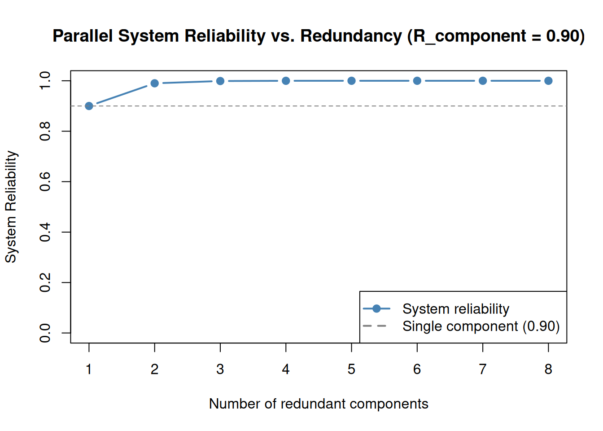

library(DiagrammeR)2 Reliability Block Diagrams
2.1 Introduction
In Chapter 1, you learned to calculate reliability metrics for individual components. This chapter extends those concepts to systems — collections of components whose arrangement determines whether the system succeeds or fails.
A Reliability Block Diagram (RBD) is a graphical tool for modeling how component reliabilities combine to produce system-level reliability. RBDs are widely used in reliability engineering to analyze designs, identify vulnerabilities, and evaluate the benefit of redundancy (Billinton and Allan 1992).
2.2 Learning Objectives
By the end of this chapter, you will be able to:
- Define reliability block diagrams and relate them to physical systems.
- Compute system reliability for series, parallel, and mixed configurations.
- Interpret k-out-of-n (voting) systems and calculate their reliability.
- Describe the relationship between RBDs and Fault Tree Analysis.
- Apply RBD calculations to a realistic multi-component system.
2.3 What is a Reliability Block Diagram?
An RBD represents each component as a block with a known reliability value. Blocks are connected by lines showing logical dependencies — not physical connections. A path from left (input) to right (output) through functioning blocks represents a working system.
Each block has a reliability \(R_i(t)\) derived from the exponential model (Chapter 1) or a Weibull fit (Chapter 3).
2.4 Series Systems
In a series system, all components must function for the system to succeed:
\[R_{\text{sys}} = R_1 \times R_2 \times \cdots \times R_n = \prod_{i=1}^{n} R_i\]
A series system is always less reliable than its weakest component. Adding more components in series can only reduce system reliability.
Example: Water Pumping System
A pumping system requires a motor (R = 0.95), a pump (R = 0.90), and a control valve (R = 0.98) to all be operational.
grViz("
digraph series {
rankdir = LR
graph [bgcolor = transparent]
node [shape = rectangle, style = filled, fillcolor = '#AED6F1',
fontname = 'sans-serif', fontsize = 12, margin = '0.2,0.1']
edge [arrowsize = 0.8]
I [shape = point, width = 0.15, fillcolor = black]
A [label = 'Motor\nR = 0.95']
B [label = 'Pump\nR = 0.90']
C [label = 'Valve\nR = 0.98']
O [shape = point, width = 0.15, fillcolor = black]
I -> A -> B -> C -> O
}
")R_motor <- 0.95
R_pump <- 0.90
R_valve <- 0.98
R_series <- R_motor * R_pump * R_valve
R_series # ~0.838[1] 0.8379The system reliability is approximately 83.8%, lower than any individual component.
NoteTry It
A conveyor belt system has 5 components in series with reliabilities 0.98, 0.96, 0.99, 0.94, and 0.97. Calculate the system reliability.
R_components <- c(0.98, 0.96, 0.99, 0.94, 0.97)
# R_series <- prod(R_components)Solution
R_components <- c(0.98, 0.96, 0.99, 0.94, 0.97)
R_series <- prod(R_components)
R_series # ~0.845[1] 0.8492432
TipReview
In a series system, which component has the greatest influence on system reliability?
Answer
The least reliable component. It is the bottleneck — improving it produces the largest gain in system reliability.2.5 Parallel Systems
In a parallel system, only one component needs to function — active redundancy (all components operate simultaneously). The system fails only if all components fail at the same time. Since component failures are assumed to be independent:
\[P(\text{all fail}) = \prod_{i=1}^{n}(1 - R_i)\]
\[R_{\text{sys}} = 1 - \prod_{i=1}^{n}(1 - R_i)\]
Adding parallel components always increases system reliability.
Example: Backup Power System
A primary generator (R = 0.90) and a standby generator (R = 0.85) — either alone keeps the system running.
grViz("
digraph parallel {
rankdir = LR
graph [bgcolor = transparent]
node [shape = rectangle, style = filled, fillcolor = '#A9DFBF',
fontname = 'sans-serif', fontsize = 12, margin = '0.2,0.1']
edge [arrowsize = 0.8]
I [shape = point, width = 0.15, fillcolor = black]
A [label = 'Generator 1\nR = 0.90']
B [label = 'Generator 2\nR = 0.85']
O [shape = point, width = 0.15, fillcolor = black]
I -> A -> O
I -> B -> O
}
")R_gen1 <- 0.90 # Generator 1
R_gen2 <- 0.85 # Generator 2
R_parallel <- 1 - (1 - R_gen1) * (1 - R_gen2)
R_parallel # 0.985[1] 0.985The parallel system reliability is 98.5%, much higher than either generator alone.
The benefit of redundancy grows with each additional component:
n_vals <- 1:8
Rc <- 0.90
R_par <- 1 - (1 - Rc)^n_vals
plot(n_vals, R_par, type = "b", col = "steelblue", lwd = 2, pch = 19,
xlab = "Number of redundant components",
ylab = "System Reliability",
main = "Parallel System Reliability vs. Redundancy (R_component = 0.90)",
ylim = c(0, 1))
abline(h = Rc, col = "gray50", lty = 2)
legend("bottomright",
legend = c("System reliability", "Single component (0.90)"),
col = c("steelblue", "gray50"), lty = c(1, 2), pch = c(19, NA), lwd = 2)
NoteTry It
A critical pump station has 3 pumps in parallel. Each pump has reliability 0.88. What is the system reliability?
R_components <- c(0.88, 0.88, 0.88)
# R_parallel <- 1 - prod(1 - R_components)Solution
R_components <- c(0.88, 0.88, 0.88)
R_parallel <- 1 - prod(1 - R_components)
R_parallel # ~0.9983[1] 0.9982722.6 Mixed Systems
Most real systems combine series and parallel blocks. To analyze a mixed system, decompose it into subsystems and apply series and parallel rules step by step, working from the innermost blocks outward.
Example: Safety System
- Subsystem A: a sensor (R = 0.95) and a transmitter (R = 0.97) in series.
- Subsystem B: two redundant actuators (each R = 0.90) in parallel.
- Subsystems A and B in series (both must work).
grViz("
digraph mixed {
rankdir = LR
graph [bgcolor = transparent]
node [shape = rectangle, style = filled, fillcolor = '#F9E79F',
fontname = 'sans-serif', fontsize = 12, margin = '0.2,0.1']
edge [arrowsize = 0.8]
I [shape = point, width = 0.15, fillcolor = black]
S [label = 'Sensor\nR = 0.95']
T [label = 'Transmitter\nR = 0.97']
A1 [label = 'Actuator 1\nR = 0.90']
A2 [label = 'Actuator 2\nR = 0.90']
O [shape = point, width = 0.15, fillcolor = black]
I -> S -> T -> A1 -> O
T -> A2 -> O
}
")# Subsystem A (series)
R_A <- 0.95 * 0.97
R_A[1] 0.9215# Subsystem B (parallel)
R_B <- 1 - (1 - 0.90) * (1 - 0.90)
R_B[1] 0.99# Overall system (A and B in series)
R_system <- R_A * R_B
R_system[1] 0.912285
TipReview
A system has two subsystems in series. Subsystem 1 has two components in parallel (each R = 0.85); Subsystem 2 is a single component with R = 0.92. What is the system reliability?
Answer
\(R_{\text{sub1}} = 1 - (1 - 0.85)^2 = 0.9775\). \(R_{\text{sys}} = 0.9775 \times 0.92 \approx 0.899\).2.7 k-out-of-n Systems
A k-out-of-n system succeeds if at least \(k\) of its \(n\) identical components function:
- \(k = n\): all must work → series.
- \(k = 1\): at least one works → parallel.
- \(1 < k < n\): voting or load-sharing system.
The reliability of a k-out-of-n system (identical components, each with reliability \(p\)) follows the binomial distribution:
\[R_{k/n} = \sum_{i=k}^{n} \binom{n}{i} p^i (1-p)^{n-i} = 1 - \text{pbinom}(k-1,\, n,\, 1-p)\]
The compact R expression counts the probability that at least \(k\) components function: pbinom(k-1, n, 1-p) gives the probability that \(k-1\) or fewer components work (i.e., the system fails), and we subtract that from 1.
Example: Flight Control Computers
A 2-out-of-3 voter: at least 2 of 3 computers must agree. Each computer has R = 0.99.
grViz("
digraph koon {
rankdir = LR
graph [bgcolor = transparent]
node [shape = rectangle, style = filled, fillcolor = '#D7BDE2',
fontname = 'sans-serif', fontsize = 12, margin = '0.2,0.1']
edge [arrowsize = 0.8]
I [shape = point, width = 0.15, fillcolor = black]
C1 [label = 'Computer 1\nR = 0.99']
C2 [label = 'Computer 2\nR = 0.99']
C3 [label = 'Computer 3\nR = 0.99']
V [label = 'Voter\n(2-of-3)', shape = diamond, fillcolor = '#F1948A', fontsize = 11]
O [shape = point, width = 0.15, fillcolor = black]
I -> C1 -> V
I -> C2 -> V
I -> C3 -> V
V -> O
}
")n <- 3 # total components
k <- 2 # minimum required
p <- 0.99 # individual reliability
R_voting <- 1 - pbinom(k - 1, n, 1 - p)
R_voting # 0.9997[1] 0.000298
NoteTry It
A 3-out-of-5 redundant sensor array. Each sensor has reliability p = 0.95. Calculate the system reliability.
n <- 5
k <- 3
p <- 0.95
# R_sys <- 1 - pbinom(k - 1, n, 1 - p)Solution
n <- 5
k <- 3
p <- 0.95
R_sys <- 1 - pbinom(k - 1, n, 1 - p)
R_sys # ~0.9988[1] 0.0011581252.8 System MTTF
For a series system of components with constant failure rates, the system failure rate equals the sum of component failure rates:
\[\lambda_{\text{sys}} = \sum_{i=1}^{n} \lambda_i \qquad \text{MTTF}_{\text{sys}} = \frac{1}{\lambda_{\text{sys}}}\]
For \(n\) identical parallel components each with failure rate \(\lambda\):
\[\text{MTTF}_{\text{parallel}} = \frac{1}{\lambda}\left(1 + \frac{1}{2} + \frac{1}{3} + \cdots + \frac{1}{n}\right)\]
Example: Two Pumps in Parallel
lambda <- 0.01 # failures per hour
MTTF_single <- 1 / lambda
MTTF_parallel <- (1 / lambda) * (1 + 1/2)
MTTF_single # 100 hours[1] 100MTTF_parallel # 150 hours — 50% longer with one spare[1] 150
TipReview
Three components in series have failure rates 0.02, 0.03, and 0.05 failures/hour. What is the system MTTF?
Answer
\(\lambda_{\text{sys}} = 0.02 + 0.03 + 0.05 = 0.10\), so \(\text{MTTF} = 1/0.10 = 10\) hours.2.9 Common Cause Failure
All the analyses above assume that component failures are statistically independent — if Component A fails, it tells us nothing about Component B’s probability of failing. In practice, this assumption can break down.
Common Cause Failure (CCF) occurs when a single event simultaneously causes multiple components to fail. Typical sources include:
- A shared environment (vibration, temperature, contamination) that degrades all components together
- A common design flaw or manufacturing batch defect
- A maintenance error that affects multiple redundant units at once
CCF is especially dangerous because redundancy does not protect against it: if both pumps in a parallel system can be destroyed by the same flooding event, adding a third pump does not help.
The Beta-Factor Model
The simplest CCF model splits each component’s total failure rate \(\lambda\) into two parts:
\[\lambda_{\text{ind}} = (1 - \beta_{\text{CCF}}) \cdot \lambda \qquad \text{(independent failures)}\] \[\lambda_{\text{CCF}} = \beta_{\text{CCF}} \cdot \lambda \qquad \text{(common-cause failures)}\]
The beta-factor \(\beta_{\text{CCF}}\) is the fraction of failures attributable to common causes. Typical values range from 0.01 (1%) for well-separated, dissimilar components to 0.20 (20%) for closely coupled identical units.
System reliability for a two-component parallel system with CCF:
\[R_{\text{sys}} = \underbrace{\left[1 - (1 - R_{\text{ind}})^2\right]}_{\text{parallel, independent part}} \times \underbrace{e^{-\lambda_{\text{CCF}} \, t}}_{\text{common-cause part}}\]
lambda <- 0.001 # total component failure rate (per hour)
t <- 1000 # mission time (hours)
beta_vals <- c(0, 0.05, 0.10, 0.20)
results <- sapply(beta_vals, function(b) {
R_ind <- exp(-(1 - b) * lambda * t) # independent reliability
R_ccf <- exp(-b * lambda * t) # common-cause reliability
R_sys <- (1 - (1 - R_ind)^2) * R_ccf
round(R_sys, 4)
})
data.frame(beta_CCF = beta_vals, R_system = results) beta_CCF R_system
1 0.00 0.6004
2 0.05 0.5935
3 0.10 0.5862
4 0.20 0.5705Even a modest \(\beta_{\text{CCF}} = 0.10\) visibly reduces the system reliability that redundancy would otherwise provide.
TipReview
Why doesn’t adding more parallel components help when \(\beta_{\text{CCF}}\) is large?
Answer
When \(\beta_{\text{CCF}}\) is large, a significant fraction of failures are common cause — they simultaneously affect all components regardless of how many there are. Adding more identical, coupled components may even increase the common-cause failure rate if they share the same environment or design flaw. Effective mitigation requires diversity (different designs, manufacturers, or locations) rather than simple redundancy.CCF data and beta-factor values for different equipment types are tabulated in IEC 61508 (functional safety) and MIL-HDBK-217F (electronic reliability). For nuclear applications, the NUREG/CR-5497 handbook provides detailed CCF databases.
2.10 Introduction to Fault Tree Analysis
Fault Tree Analysis (FTA) (Vesely et al. 1981) is a top-down approach that starts with an undesirable event (the top event) and works backward to identify combinations of component failures that could cause it.
While an RBD asks “What must work for the system to succeed?”, a fault tree asks “What can cause the system to fail?”
Gates
- AND gate: top event occurs only if all inputs occur — corresponds to parallel RBD components (all must fail).
- OR gate: top event occurs if any input occurs — corresponds to series RBD components (any failure causes system failure).
RBD—Fault Tree Duality
| RBD configuration | Fault tree gate for system failure |
|---|---|
| Series (all must work) | OR gate (any failure causes system failure) |
| Parallel (any can work) | AND gate (all must fail for system failure) |
grViz("
digraph fta {
rankdir = TB
graph [bgcolor = transparent]
node [fontname = 'sans-serif', fontsize = 12, style = filled]
edge [arrowsize = 0.8]
Top [label = 'System\nFailure', shape = rectangle, fillcolor = '#E74C3C', fontcolor = white]
OR [label = 'OR Gate', shape = diamond, fillcolor = '#F39C12']
F1 [label = 'Component A\nFails', shape = ellipse, fillcolor = '#AED6F1']
F2 [label = 'Component B\nFails', shape = ellipse, fillcolor = '#AED6F1']
Top -> OR
OR -> F1
OR -> F2
}
")This OR gate corresponds to a two-component series RBD: any single failure causes system failure. For complex fault trees, the R package FaultTree on CRAN provides computational support.
TipReview
A fault tree has an AND gate combining two component failures. Which RBD configuration does this correspond to?
Answer
Parallel — an AND gate means the system fails only if both components fail simultaneously, which is exactly the parallel (redundant) configuration.2.11 Case Study: Industrial Cooling System
An industrial cooling system has the following architecture:
- Water supply subsystem: two pumps in parallel (each R = 0.92), followed by a filter in series (R = 0.99).
- Control subsystem: a primary controller (R = 0.97) and a backup controller in parallel (R = 0.95).
- Both subsystems must work (series at system level).
# Step 1 — Water supply subsystem
R_pump_parallel <- 1 - (1 - 0.92)^2
R_water <- R_pump_parallel * 0.99
R_water[1] 0.983664# Step 2 — Control subsystem
R_control <- 1 - (1 - 0.97) * (1 - 0.95)
R_control[1] 0.9985# Step 3 — Overall system (both subsystems in series)
R_system <- R_water * R_control
R_system[1] 0.9821885
NoteTry It
Modify the case study: the filter is upgraded to R = 0.999. Recalculate the system reliability.
R_pump1 <- 0.92
R_pump2 <- 0.92
R_filter <- 0.999 # upgraded from 0.99
R_ctrl1 <- 0.97
R_ctrl2 <- 0.95Solution
R_pump1 <- 0.92
R_pump2 <- 0.92
R_filter <- 0.999
R_ctrl1 <- 0.97
R_ctrl2 <- 0.95
R_pump_parallel <- 1 - (1 - R_pump1) * (1 - R_pump2)
R_water <- R_pump_parallel * R_filter
R_control <- 1 - (1 - R_ctrl1) * (1 - R_ctrl2)
R_system <- R_water * R_control
R_system # ~0.985[1] 0.99111752.12 Summary
Key takeaways:
- Series: \(R_{\text{sys}} = \prod R_i\) — every component must work; reliability decreases with more components.
- Parallel: \(R_{\text{sys}} = 1 - \prod(1-R_i)\) — redundancy; only one component needs to work.
- Mixed: decompose into subsystems, apply formulas step by step.
- k-out-of-n:
1 - pbinom(k-1, n, 1-p)for voting/load-sharing systems. - Series MTTF: \(1/\sum\lambda_i\); Parallel MTTF: \((1/\lambda)\sum_{i=1}^{n}(1/i)\).
- Common Cause Failure: redundancy requires diversity to be effective — the \(\beta_{\text{CCF}}\) factor quantifies the fraction of failures caused by shared events; adding more identical, coupled components does not protect against CCF.
- FTA duality: series RBD ↔︎ OR gate; parallel RBD ↔︎ AND gate.
Billinton, Roy, and Ronald N. Allan. 1992. Reliability Evaluation of Engineering Systems. 2nd ed. Plenum Press.
Vesely, W., F. Goldberg, N. Roberts, and D. Haasl. 1981. Fault Tree Handbook. NUREG-0492. US Nuclear Regulatory Commission.